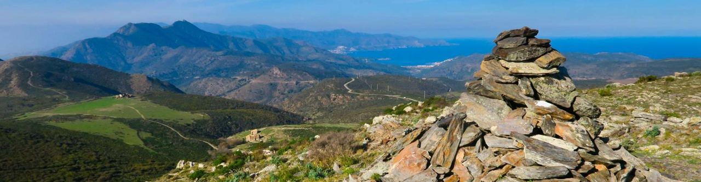

Ruta · Roses
Itinerari curt i agradable que ens permet conèixer, veure i gaudir de la duresa del paisatge del Cap de Creus des de la part alta. Passarem entre brolles d'estepes i brucs, per antics terrenys…